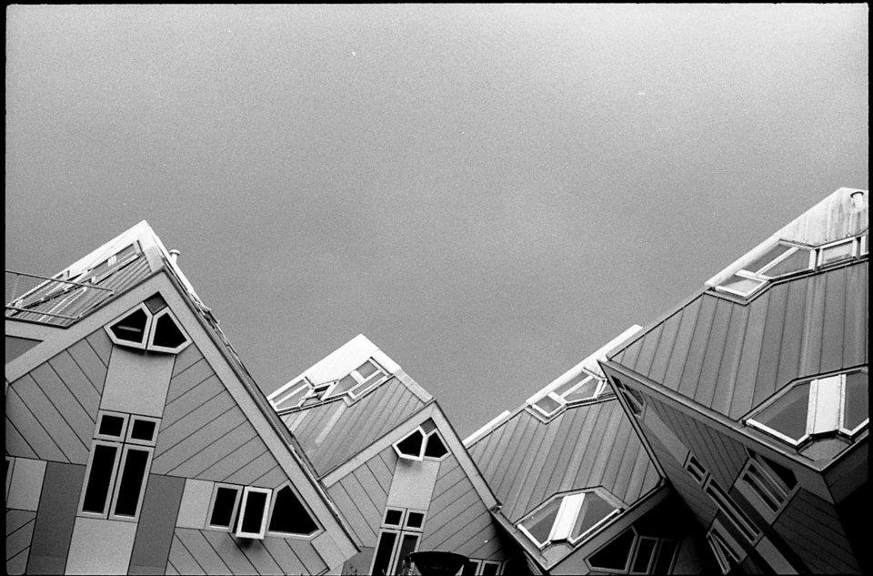
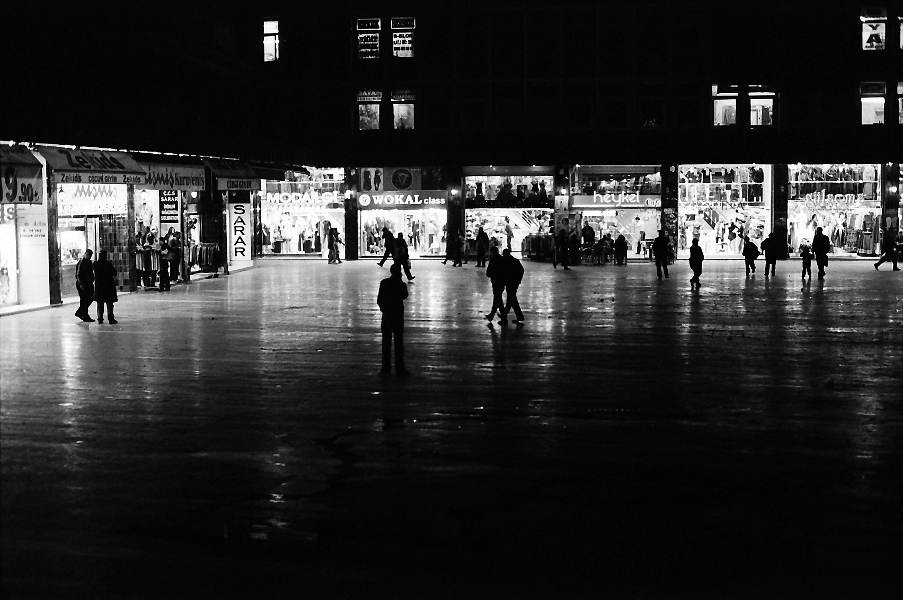

<!-- Amatör Fotoğrafçılık Topluluğu tanıtım -->
	  <div class="row">
		<!--
		Fotoğraflar

		<div id="myCarousel" class="carousel slide span8 offset2">
				  <!-- Carousel items -->
		<!--
				  <div class="carousel-inner">
					<div class="active item">
						
						<div class="carousel-caption">
		                  <h4>First Thumbnail label</h4>
		                  <p>Cras justo odio, dapibus ac facilisis in, egestas eget quam. Donec id elit non mi porta gravida at eget metus. Nullam id dolor id nibh ultricies vehicula ut id elit.</p>
		               </div>
					</div>
					<div class="item">
						
						<div class="carousel-caption">
		                  <h4>First Thumbnail label</h4>
		                  <p>Cras justo odio, dapibus ac facilisis in, egestas eget quam. Donec id elit non mi porta gravida at eget metus. Nullam id dolor id nibh ultricies vehicula ut id elit.</p>
		               </div>
					</div>
					<div class="item">
					
						<div class="carousel-caption">
		                  <h4>First Thumbnail label</h4>
		                  <p>Cras justo odio, dapibus ac facilisis in, egestas eget quam. Donec id elit non mi porta gravida at eget metus. Nullam id dolor id nibh ultricies vehicula ut id elit.</p>
		               </div>
					</div>
				  </div>

					-->
				  <!-- Carousel nav -->
				  <!--
				  <a class="carousel-control left" href="#myCarousel" data-slide="prev">&lsaquo;</a>
				  <a class="carousel-control right" href="#myCarousel" data-slide="next">&rsaquo;</a>
				</div>
			</div> -->
		<div class="row"><!--
			<div class="span12">
			   <h1>Amatör Fotoğrafçılık Topluluğu</h1>
			   <blockquote>
			   		<p>"Bir kişiyi elinde fotoğraf makinasıyla ( veya fotoğraf makinasını işleten'i ile) gördüğümüzde, bir tür avlanma davranışına tanık oluruz. Bunlar paleotik çağda tundrada avlanan bir kimsenin hareketleridir."</p>
			   <p></p>
			   <small>Vilem Flusser, 1983, <cite title="Kaynak">"Bir Fotoğraf Felsefesine Doğru"</cite></small></blockquote>
<p>Son yıllarda avcı sayısındaki gözle görülür artış; beraberinde çeşitli sorunları da getirdi. Önceleri sadece bilim insanlarının ilgilendiği, zamanla belgeselcilerin, gazetecilerin ve sanatla ilgilenenlerin eline geçen fotoğraf makinesi, günümüzün en "popüler oyuncağı", en kolay ulaşılabilen, minimum teknik bilginin "üretmek" için yeterli olduğu bir aygıtı. Bu fotoğrafik üretimden bahsederken kelimeleri doğru seçmek gerekiyor, bulabildiğim en doğru tasvir fotoğrafın artık seri üretim yapan bir fabrikanın - dahası birbirinin aynı ürünler üretmesi gerekirken gün geçtikçe kalitesini düşürüp kötü taklitler üretir hale geldiğini rahatlıkla fark edebiliriz.- ürünleri haline dönüşmüş olduğudur. Bunun en önemli sebebi, fotoğraf makinesinin kullanımının bir fırça ya da keman yayı gibi ustalık gerektirmemesi. Makinenin temel parçalarının işleyişlerini , üstündeki tuşların ne işe yaradığını öğrenmek için birkaç saat ayırmak yeterli oluyor, dahası gelişen teknolojiyle beraber makine parçaları ve üstündeki tuşları öğrenmeye de gerek kalmıyor; tek tuşa basarak "tablo gibi fotoğraf"lar elde edebilmemiz, çeşitli efektleri üstüne eklenmiş, “eski”ymiş (Burdaki eskiyi tırnak içine almamın bir sebebi önümüzdeki yazılardan birinde eskinin görüntüsü tekrar moda olurken, bir çok şeyin ne kadar hızlı eskiyip değerini kaybettiğiyle ilgili birşeyler de yazacak olmam) görüntüsü verilmiş fotoğraflara sahip olmamız mümkün. Kötü taklit üretmenin kolaylığının yanına sanatla uğraşmanın ve sanat konuşmanın bir sosyal statü ve özgüven sağladığını da göz önünde bulundurursak, fotoğrafla ilgilenmenin, günümüzde dalga geçilen ateş başında akdeniz akşamları çalmakla aynı yere hatta fotoğraf makinelerinin gitarlara göre çok daha fazla işlevi otomatik olarak yaptığı (deklanşöre basmak hariç) göz önünde bulundurulursa daha da kötü bir yere geldiği söylenebilir. Fotoğrafın durduğu yer, işlevi ve magazinsel boyutu düşünüldüğünde Aft hala ağızdaki yara mı?</p>
			</div>-->
			<div class="span12">
				<h1>Amatör Fotoğrafçılık Topluluğu</h1>
				<p>
			   		AFT 1984’te kurulmuş olup, okul içindeki diğer resmi topluluklar gibi ODTÜ Kültür İşleri Müdürlüğüne bağlı olarak çalışmalarını yürütmektedir. Kuruluşundan 4 yıl sonra, 1988’de “I. Ankara Fotoğraf Şenliğini” düzenlemiştir.
				</p>
				<p>
					AFT fotoğraftan önce bir arkadaşlar topluluğudur.  Kurulduğu yıldan beri otokrasi karşıtı, totalitarizm düşmanı, demokrat, çok renkli, çok sesli, eleştirel ve özeleştirel, özgür düşünen, deneysel ve yenilikçi, yaratıcı, amatör ruhlu muhalif ve devrimci duruşuyla var olmuştur. Sadece fotoğraf dünyasına dair sorunsallaştırdıklarıyla değil, toplumsal sorunlarla da mücadelenin farkındalığını hiçbir zaman yitirmemiş ve bunu bir görev olarak benimsemiştir.
				</p>
				<p>
					Amatör ruhunu kurulduğu günden beri, hiç bir zaman kaybetmeyen topluluk, amatörlüğü de değişen sistemle birlikte sürekli tartışılması gereken bir kavram olarak görmüştür. Amatörlük en kısa tanımla aşktır ve AFT fotoğrafı aşkla yapar, aşkla üretir ve hiçbir zaman fotoğraf piyasasında yer edinme gibi bir gayret içerisine girmez.
				</p>
				<p>
					Topluluk için en değerli şey emektir ve emeğe verilen bu değeri “fotoğraf” konusunda da olabildiğince yüceltmeye çalışır. Fotoğrafın sadece “deklanşöre basmak”tan ibaret bir şey olduğunu düşünmenin fotoğrafa ve fotoğrafçılığa karşı yapılan en büyük saygısızlık olduğunu bilir ve fotoğrafa verilmesi gereken bu emeğin, başlangıç aşamasında olan bizler için, filmli makinelerden ve karanlık oda deneyimlerinden oluşması gerektiğini düşünür. Düzenli olarak dönemde bir olmak üzere yılda iki fotoğraf sergisi yapar ve hiçbir sergisinde dijital çekime ve dijital baskıya yer vermez.
				</p><p>
					AFT, kapitalizmin bir ürünü olan kültür endüstrisinin bir elçisi olmayı reddedip, herhangi bir şeyi tüketmeden, fotoğrafı üretmenin yollarını yıllarca aramış ve hala aramaktadır. Fotoğrafta ve sanatta da iktidarını güçlendirmeye çalışan kapitalizmin tamamen karşısında konum alır ve amatörlüğün getirileri olan özgürlükçü, yenilikçi, eleştirel ve devrimci bir ruhla üretimini gerçekleştirmeye çalışır.
				</p>
				<p>
					<ul style="list-style-type: lower-greek;">
						<li>AFT hep barakadır.</li>
						<li>AFT çoğunlukla hypodur.</li>
						<li>AFT baya bi geliştiricidir.</li>
						<li></li>
						<li>AFT her cuma toplanmadır.</li>
						<li>AFT her buluşmada tartışmadır.</li>
						<li>AFT arada sırada içmecedir.</li>
						<li></li>
						<li>AFT bazı bazı katil kimdir.</li>
						<li>AFT bi kere yoktur.</li>
						<li>AFT bazen klişedir.</li>
						<li>AFT çoğu zaman iğnedir.</li>
						<li>AFT kimi zaman çuvaldızdır.</li>
						<li>AFT bi kere de ağızda çıkan yara mıdır?</li>
						<li></li>
						<li>AFT arkadaştır.</li>
						<li>AFT dosttur.</li>
						<li>AFT yoldaştır.</li>
						<li>AFT sevgilidir.</li>
						<li>AFT aşktır.</li>
						<li></li>
						<li>AFT fotoğraf çekmez.</li>
						<li>AFT fotoğraf çeker.</li>
						<li>AFT çeker çekmez,</li>
						<li>AFT yıkar yıkamaz,</li>
						<li>AFT yine yapacağını yapar.</li>
						<li></li>
						<li>AFT gelenekçidir.</li>
						<li>AFT geleneği yoktur.</li>
						<li>AFT bazen sendir.</li>
						<li>AFT bazen bendir.</li>
						<li>AFT bazen bizdir.</li>
						<li></li>
						<li>AFT aslında herşeydir.</li>
						<li>Sadece ağızda çıkan bir yara değildir.</li>
					</ul>

				</p>
			</div>
    </div>
<!-- Amatör Fotoğrafçılık Topluluğu tanıtım sonu -->
